High Functioning Podcast
Produced and engineered the show end to end — booking, editing, captioning, packaging — and built the transcript-to-clips render pipeline that made a two-person team ship 50+ episodes and 274K views in 18 months.
Split into the production systems I build for media work, and the utilities and experiments I build to think through problems.
Produced and engineered the show end to end — booking, editing, captioning, packaging — and built the transcript-to-clips render pipeline that made a two-person team ship 50+ episodes and 274K views in 18 months.
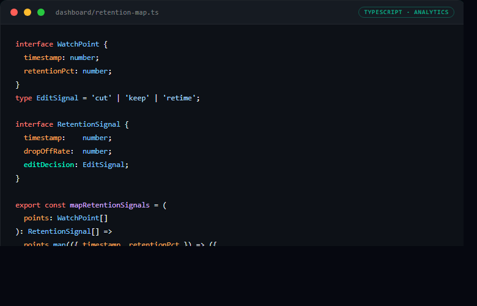
Structured reporting layer that maps watch-time drop-offs to specific edit decisions for iterative episode optimization.
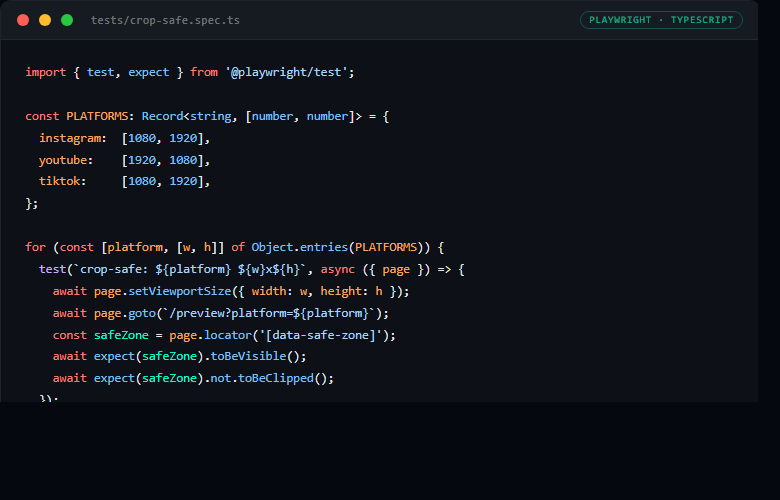
Platform-safe area preview system with deterministic screenshot checks to catch layout breakage before publishing.
View Source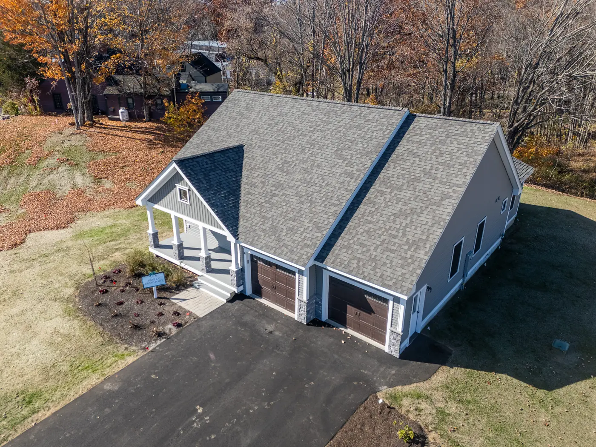
FAA-licensed drone photography and real-estate media for clients in Massachusetts — aerial stills, listing videos, and the full Next.js site that delivers them. Fast turnaround, repeatable workflow.
Real production credit, real clients, real turnaround. Based in Peabody, MA — built for the brokers and developers who need media yesterday, not next week.
FAA Part 107 · Next.js 14 · Vercel
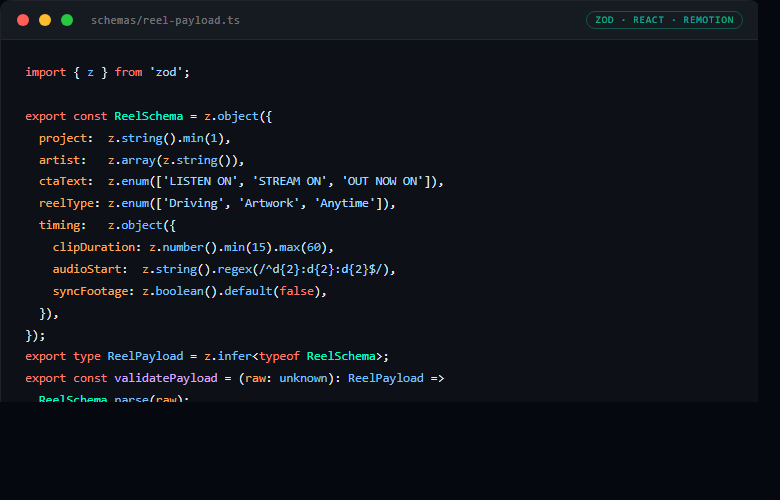
Template-based short-form video rendering tool that consumes payload inputs and emits batch reels with repeatable output quality.
Private Repo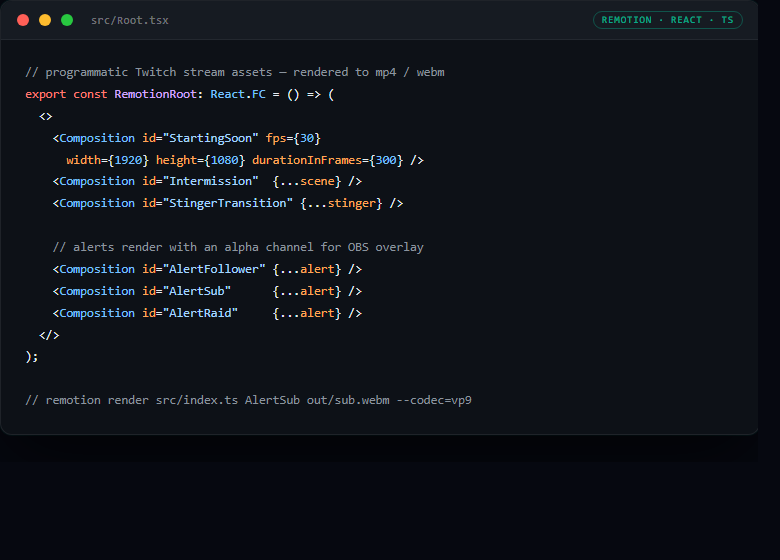
A Remotion render pipeline that programmatically generates a full broadcast kit for a Twitch channel — starting-soon and intermission scenes, animated follower / sub / raid alerts, a stinger transition, and info panels.
Every asset is defined as code, so the whole pack re-renders on a single command when the brand changes. Built for the "crashdontfall" stream as a personal project — no public site, it outputs video and image files.
Remotion · React · TypeScript
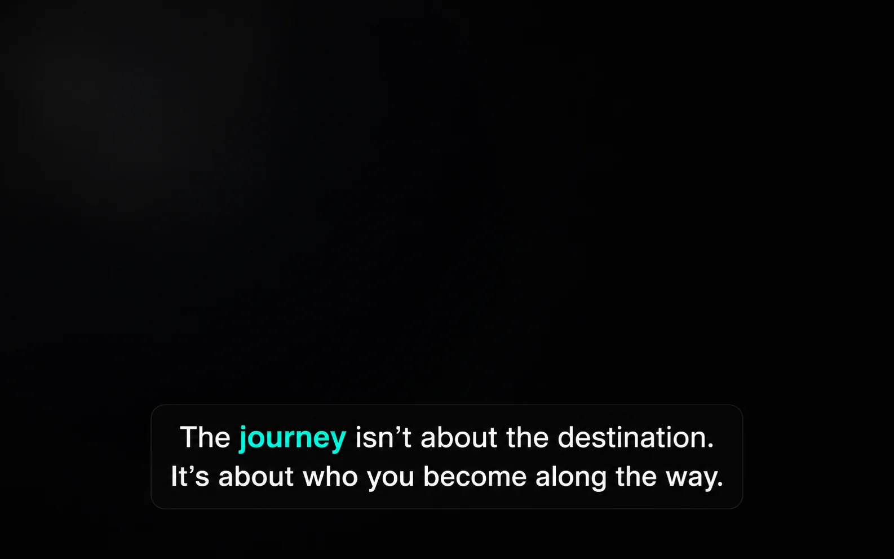
Upload a reel and get back accurate, broadcast-style subtitles as SRT or EDL — ready to drop into any timeline or social platform. The accessibility step most teams skip, automated.
Closes the accessibility gap that kills short-form workflows: every reel gets accurate, formatted captions without a manual transcript pass. Live tool, ready to use.
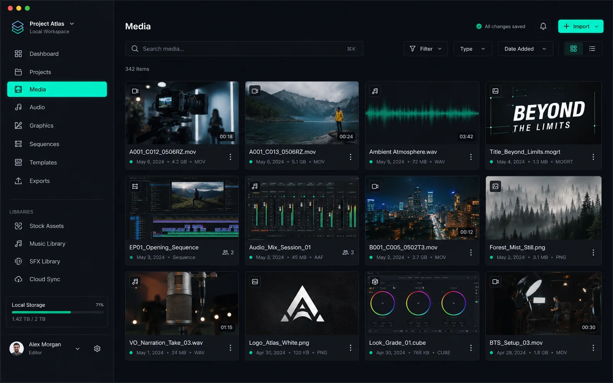
An internal media tool for companies to make their own reels and short-form content automatically — runs in any browser, no install, drag-in assets and get publish-ready output without opening a timeline.
Built as a Tauri desktop app so it feels native but ships small, runs offline, and respects whatever security posture your company already has. Personal project.
Tauri · React · TypeScript
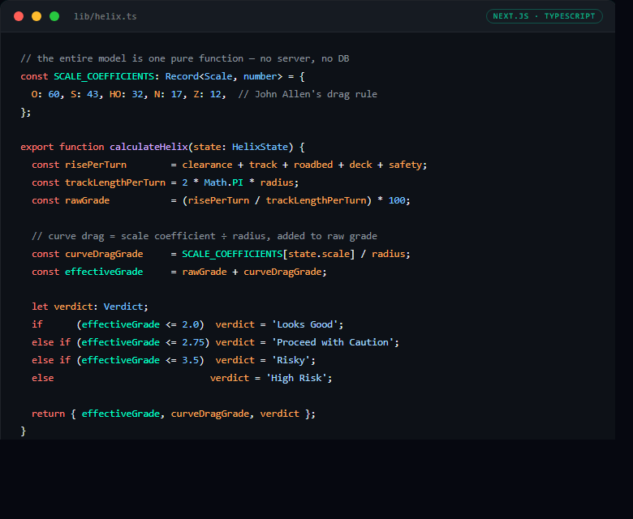
A model railroad helix risk checker. It walks five risk dimensions for any helix design in O, S, HO, N, or Z scale and returns a plain-English verdict — from Looks Good to High Risk — before you cut wood.
All math runs in the browser — no server, no database, no account. Inputs serialize into the URL, so a design shares with a single link. Verdict thresholds are calibrated against published model railroad guidance, and the site ships with a glossary, FAQ, gear checklist, and three worked example builds.
Next.js 14 App Router · React · TypeScript · Tailwind CSS · Vercel
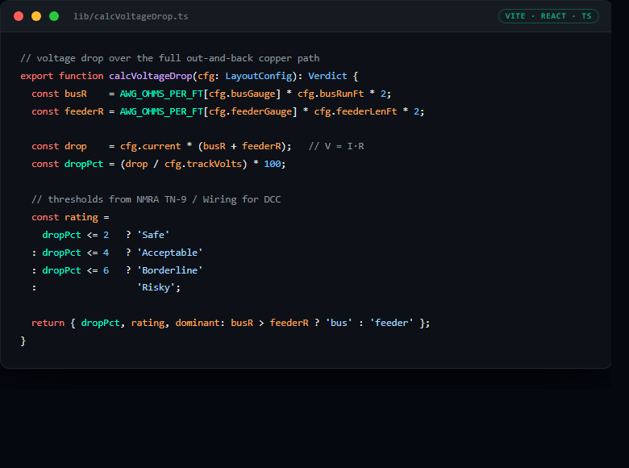
A voltage-drop calculator for model railroaders. Type your scale, bus wire, and feeder plan and get a Safe / Acceptable / Borderline / Risky verdict before you solder a single rail. Built after a weekend of chasing stalls that turned out to be an undersized 16 AWG bus.
Per-scale SEO pages (N, HO, O, G) share one JS bundle for instant navigation, and it prints to a clean black-and-white workbench worksheet. Client-side only — no backend, no accounts, no analytics.
Vite · React · TypeScript · SEO · Vercel
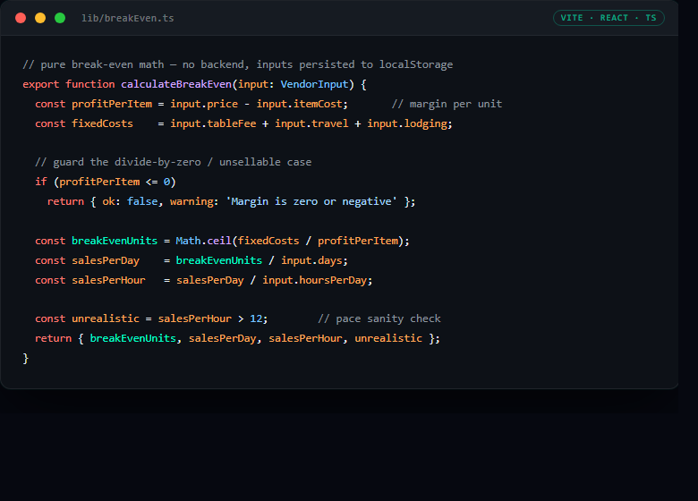
Tells anime convention vendors how many prints, charms, stickers, or commissions they need to sell to cover their table before they profit — with live sales-per-day and sales-per-hour targets.
Mobile-first one-page dashboard with a sticky desktop result panel. All math is client-side with divide-by-zero guards — no backend, no account, no tracking.
Vite · React · TypeScript · Tailwind CSS · Vercel
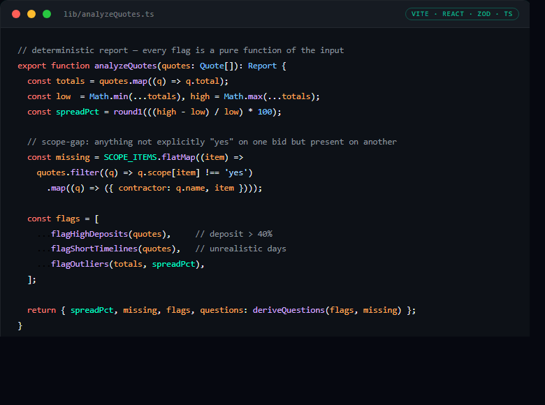
Helps homeowners compare contractor bids side by side, spot scope items one quote quietly left out, and generate the exact follow-up questions to ask each contractor before signing.
Deliberately no AI — every flag is a pure function of the structured input, so a homeowner can trust the arithmetic. Runs entirely client-side; nothing leaves the browser. Ships with security headers, an origin-locked API, and a privacy page.
Vite · React 19 · TypeScript · Zustand · Zod · Vercel
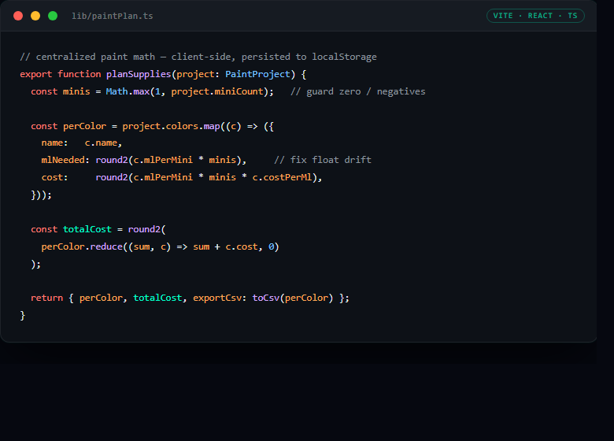
Detects the main colors in a reference image, then builds a miniature- painting supply list — how much of each paint you need and what it costs — before you buy.
A calm, warm-paper tool feel. Runs entirely client-side with your inputs saved in the browser — no account, no backend.
Vite · React · TypeScript · localStorage · Vercel
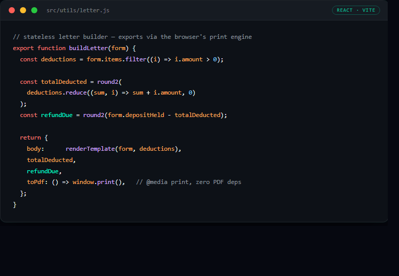
Helps self-managing landlords generate a professional, itemized security- deposit deduction letter with the math done correctly — the #1 way landlords lose small-claims disputes is getting this wrong.
A deliberately zero-backend build with edge security headers, a strict CSP, and a published privacy policy. Live at depositletter.com.
React 19 · Vite · @media print · Vercel
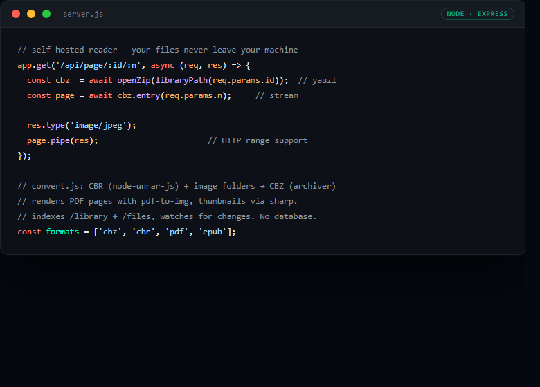
A self-hosted reading library for comics, manga, PDFs, and EPUBs that runs on your own machine and streams to any browser on your home network — your files never leave your device.
Express server that indexes your files, streams comic pages from CBZ, renders PDF pages, and generates thumbnails. No cloud, no accounts, no database. A personal project — runs locally, so there's no public site.
Node.js · Express · PWA · sharp · pdf-to-img

Browser-based combinatorial analysis tool for opening-hand consistency and mulligan decision support.
View Source
Reducer-driven game state machine built to enforce explicit transition rules and avoid hidden state drift bugs.
View SourceNeed someone to run, fix, or scale your media production?